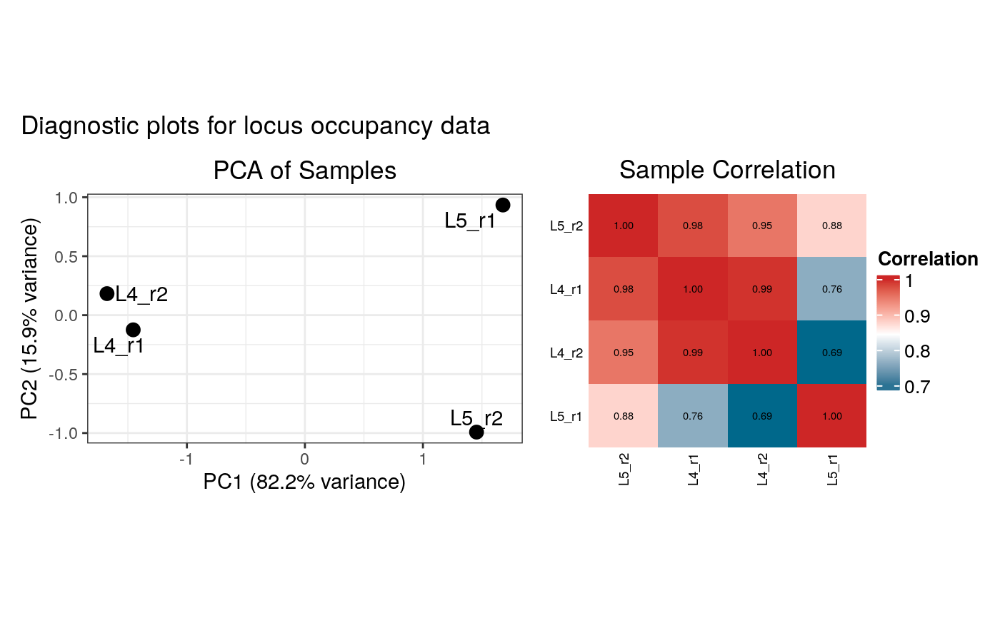
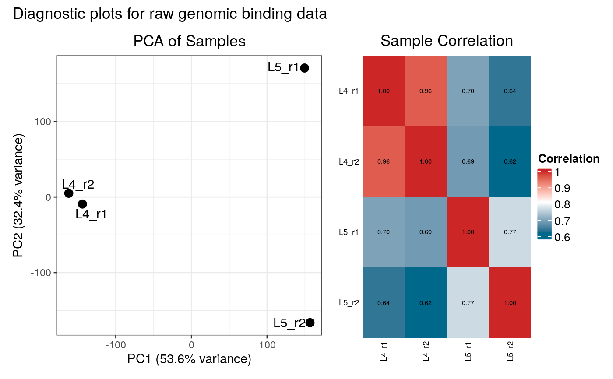

Load genome-wide binding data for gene expression (RNA polymerase occupancy)
Source:R/load_data.R
load_data_genes.RdReads RNA Polymerase DamID binding profiles either from bedGraph files or directly from a named list of GRanges objects. Calculates binding occupancy summarised over genes.
Usage
load_data_genes(
binding_profiles_path = NULL,
binding_profiles = NULL,
drop_samples = NULL,
quantile_norm = FALSE,
organism = "drosophila melanogaster",
calculate_fdr = FALSE,
fdr_iterations = 50000,
ensdb_genes = NULL,
BPPARAM = BiocParallel::bpparam(),
plot_diagnostics = interactive()
)Arguments
- binding_profiles_path
Character vector of directories or file globs containing log2 ratio binding tracks in bedGraph format. Wildcards ('*') supported.
- binding_profiles
Named list of GRanges objects representing binding profiles.
- drop_samples
A character vector of sample names or patterns to remove. Matching samples are removed from the analysis before normalisation and occupancy calculation. This can be useful for excluding samples that fail initial quality checks. Default: `NULL` (no samples are dropped).
- quantile_norm
Logical (default: FALSE) quantile-normalise across all signal columns if TRUE.
- organism
Organism string (lower case) to obtain genome annotation from (if not providing a custom `ensdb_genes` object) Defautls to "drosophila melanogaster".
- calculate_fdr
Calculate FDR based on RNA Pol occupancy (see details) (default: FALSE)
- fdr_iterations
Number of iterations to use to determine null model for FDR (default: 50000)
- ensdb_genes
GRanges object: gene annotation. Automatically obtained from `organism` if NULL.
- BPPARAM
BiocParallel function (defaults to BiocParallel::bpparam())
- plot_diagnostics
Logical. If `TRUE` (the default in interactive sessions), diagnostic plots (PCA and correlation heatmap) will be generated and displayed for both the raw binding data and the summarised occupancy data.
Value
List with elements:
- binding_profiles_data
data.frame of merged binding profiles, with chr, start, end, sample columns.
- occupancy
data.frame of occupancy values summarised over genes.
- test_category
Character scalar; will be "expressed".
Details
One of `binding_profiles_path` or `binding_profiles` must be provided.
When supplying GRanges lists, each GRanges should contain exactly one numeric metadata column representing the signal, and `binding_profiles` must be a named list, with element names used as sample names.
The algorithm for determining gene occupancy FDR (as a proxy for gene expression) is based on `polii.gene.call`, which in turn was based on that described in Southall et al. (2013). Dev Cell, 26(1), 101–12. doi:10.1016/j.devcel.2013.05.020. Briefly, the algorithm establishes a null model by simulating the distribution of mean occupancy scores from random fragments. It fits a two-tiered regression to predict the False Discovery Rate (FDR), based on fragment count and score. For each gene, the true weighted mean occupancy and fragment count are calculated from the provided binding profile. Finally, the pre-computed regression models are used to assign a specific FDR to each gene based on its observed occupancy and fragment count.
Examples
# Create a mock GRanges object for gene annotations
# This object, based on the package's unit tests, avoids network access
# and includes a very long gene to ensure overlaps with sample data.
mock_genes_gr <- GenomicRanges::GRanges(
seqnames = S4Vectors::Rle("2L", 7),
ranges = IRanges::IRanges(
start = c(1000, 2000, 3000, 5000, 6000, 7000, 8000),
end = c(1500, 2500, 3500, 5500, 6500, 7500, 20000000)
),
strand = S4Vectors::Rle(GenomicRanges::strand(c("+", "-", "+", "+", "-", "-", "+"))),
gene_id = c("FBgn001", "FBgn002", "FBgn003", "FBgn004", "FBgn005", "FBgn006", "FBgn007"),
gene_name = c("geneA", "geneB", "geneC", "geneD", "geneE", "geneF", "LargeTestGene")
)
# Get path to sample data files included with the package
data_dir <- system.file("extdata", package = "damidBind")
# Run loading function using sample files and mock gene annotations
# This calculates occupancy over genes instead of peaks.
loaded_data_genes <- load_data_genes(
binding_profiles_path = data_dir,
ensdb_genes = mock_genes_gr,
quantile_norm = FALSE
)
#> Locating binding profile files
#> Building binding profile dataframe from input files ...
#> - Loaded: Bsh_Dam_L4_r1-ext300-vs-Dam.kde-norm
#> - Loaded: Bsh_Dam_L4_r2-ext300-vs-Dam.kde-norm
#> - Loaded: Bsh_Dam_L5_r1-ext300-vs-Dam.kde-norm
#> - Loaded: Bsh_Dam_L5_r2-ext300-vs-Dam.kde-norm
#> Calculating average occupancy for 7 regions...
#> Generating diagnostic plots...
#> 3 rows with zero variance were filtered.

#> 3989 rows with zero variance were filtered.

# View the head of the occupancy table
head(loaded_data_genes$occupancy)
#> gene_id gene_name name nfrags
#> 2L:1000-1500 FBgn001 geneA 2L:1000-1500 4
#> 2L:2000-2500 FBgn002 geneB 2L:2000-2500 4
#> 2L:3000-3500 FBgn003 geneC 2L:3000-3500 4
#> 2L:5000-5500 FBgn004 geneD 2L:5000-5500 4
#> 2L:6000-6500 FBgn005 geneE 2L:6000-6500 2
#> 2L:7000-7500 FBgn006 geneF 2L:7000-7500 1
#> Bsh_Dam_L4_r1-ext300-vs-Dam.kde-norm
#> 2L:1000-1500 0.000000
#> 2L:2000-2500 0.000000
#> 2L:3000-3500 0.000000
#> 2L:5000-5500 1.465469
#> 2L:6000-6500 1.515389
#> 2L:7000-7500 -0.130000
#> Bsh_Dam_L4_r2-ext300-vs-Dam.kde-norm
#> 2L:1000-1500 0.000000
#> 2L:2000-2500 0.000000
#> 2L:3000-3500 0.000000
#> 2L:5000-5500 1.444371
#> 2L:6000-6500 1.791916
#> 2L:7000-7500 -0.110000
#> Bsh_Dam_L5_r1-ext300-vs-Dam.kde-norm
#> 2L:1000-1500 0.0000000
#> 2L:2000-2500 0.0000000
#> 2L:3000-3500 0.0000000
#> 2L:5000-5500 1.2137325
#> 2L:6000-6500 0.2373453
#> 2L:7000-7500 -0.0300000
#> Bsh_Dam_L5_r2-ext300-vs-Dam.kde-norm
#> 2L:1000-1500 0.0000000
#> 2L:2000-2500 0.0000000
#> 2L:3000-3500 0.0000000
#> 2L:5000-5500 0.8943313
#> 2L:6000-6500 0.6489222
#> 2L:7000-7500 -0.0900000